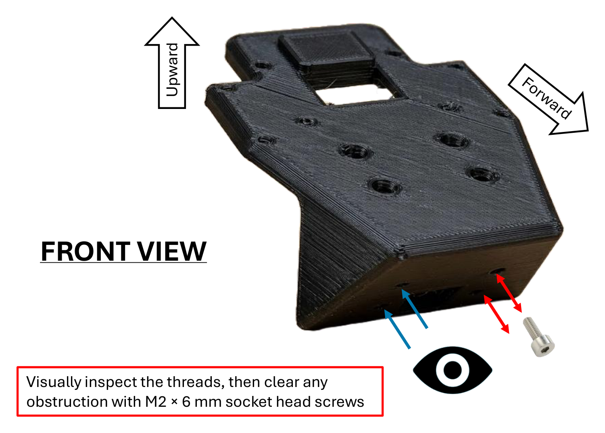
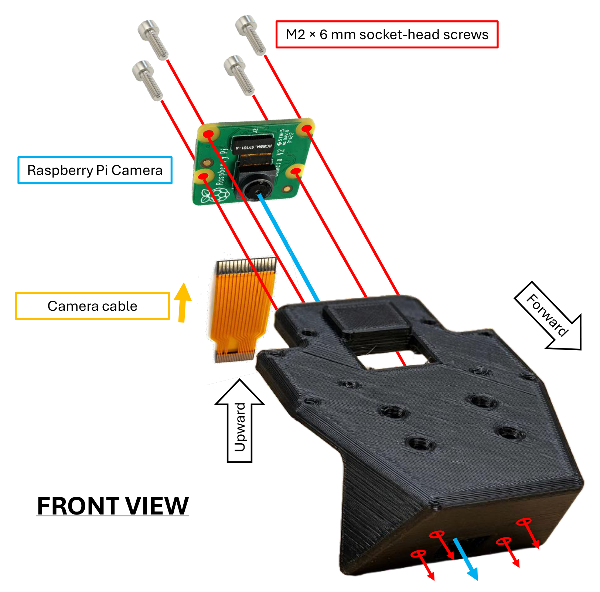

Task 3: Install camera
Clear the printed holes, install the camera, and connect the camera ribbon cable.
Parts required
- Camera/GPS mount assembly from Task 2
- Raspberry Pi camera module
- 1.5-inch camera ribbon cable
- Fastener kit
- GPS + Camera subkit
- Four M2 × 6 mm socket-head screws
- GPS + Camera subkit
Tools required
- 1.5 mm Allen key
- Needle-nose pliers
Step 1. Clear the printed mounting holes
- Look straight down each of the four camera mounting holes as shown in .
- Each hole must be completely clear. If printed plastic blocks a hole, use the 1.5 mm Allen key to thread one M2 × 6 mm socket-head screw into that hole from the outside of the mount.
- Use the 1.5 mm Allen key to drive the screw only far enough to push the plastic out the back side.
- Back the screw completely out, then use the needle-nose pliers to remove any loose plastic still attached on the back side.

Clear all four mounting holes before installing the camera.
Step 2. Install the camera and ribbon cable
- Retrieve the camera. Surrender the lens-adjustment tool to a faculty member.
- Use a fingernail to gently release the black cable retainer on the camera.
- Remove the white ribbon cable from the camera and surrender it to a faculty member.
- Install the camera into the camera/GPS mount exactly as shown in . The cable retainer must face the rear of the mount.
- Make sure the PCB sits flush against the plastic mount so the lens seats fully in the square opening.
- Use the needle-nose pliers to hold each M2 × 6 mm screw in place and tighten it gently with the 1.5 mm Allen key. Start with one of the rear holes if that is easier, then tighten in a crisscross pattern.
- Insert the wide, 15-pin end of the 1.5-inch camera cable into the camera connector by hand and press the retainer closed gently.
- The metal contacts on the ribbon cable must face downward, away from the black retainer.
If time is tight.
Two diagonal camera screws are acceptable. Four screws are preferred.
Two diagonal camera screws are acceptable. Four screws are preferred.

Camera orientation and hardware.
Common errors
- Leaving print debris in the holes and forcing the screws.
- Installing the camera backward so the cable retainer does not face the rear.
- Not seating the lens fully in the square opening.
- Installing the ribbon cable with the metal contacts facing the wrong way.